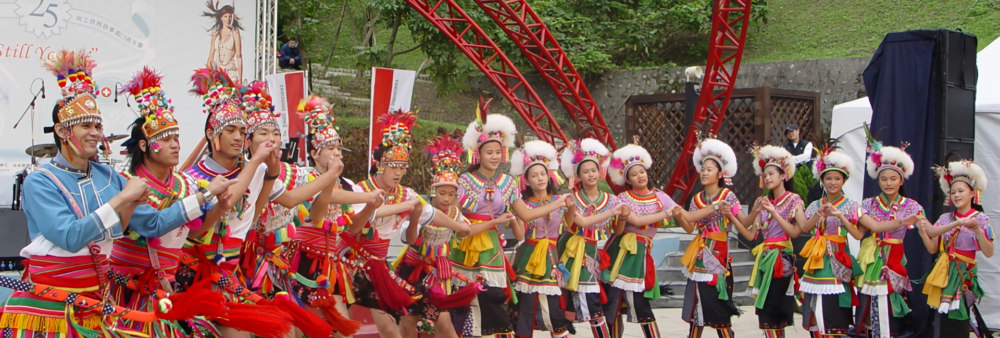
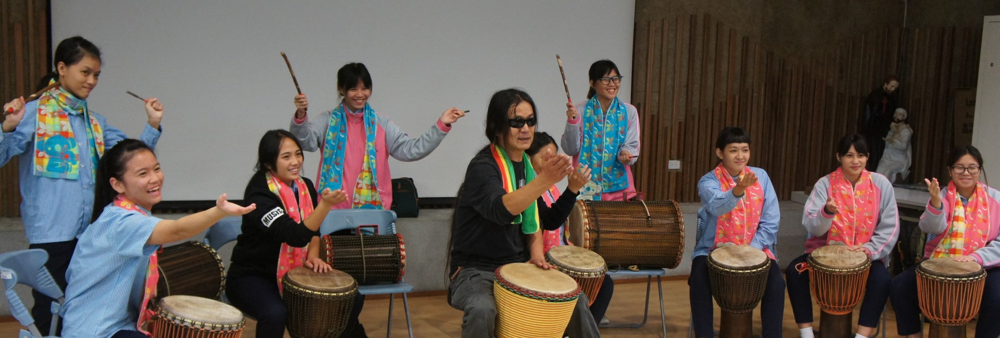

立足台灣多元族群土地，用文化凝聚情感，用行動溫暖人間。
▲ 台東太麻里晨曦勝景（照片：台東縣政府提供）
「大澳灣」之名取之於早期南台灣“希拉雅”平埔族人對其濱臨海灣居住地稱呼──「台窩灣」的諧音，其原為“陸地中的大湖”之意（今有學者認為此稱呼係台灣之名的可能由來之一）。此地氣候宜人，土地肥沃，漁獵取之不盡，人口快速成長，生活富足安康，成為當時南台灣第一大部落族群。
由於外來民族不斷登陸入侵，其部落族人為了活存，不得不遷徙到東部的花蓮與台東等地，這也是台灣於時代洪流中不斷遭受外來衝擊之寫照，然住民卻能堅忍卓絕，毅力不拔，展現無窮的韌性與活力而得以在這美麗之島繁衍下來。
故我們禮讚「大澳灣」此深具精神意涵與族群情感的名字，做為讚頌這塊土地以及其多元族群文化與堅忍卓絕的精神表徵，並藉以激發生於斯長於斯的民眾愛護鄉土的情懷。
「大澳灣文化工作團」係基於熱愛鄉土情懷於 2000 年成立，而於 2004 年依據「台北市演藝團體輔導規則」規定所核准登記屬非營利性組織之演藝文化工作團隊（北市演藝團體第 0293 字號），結合台東及台東旅居北部之原住民朋友，致力於傳承與闡揚原住民部落樂舞文化工作。
此外團隊負責人基於「人無論境遇如何，不論身處何地，必要之時，有需挺身而出，為家鄉盡一份心力」之信念，亦長年投入偏鄉醫療、車輛捐贈、身障與長照等多面向之社會服務工作。
團隊能力微薄，一路走來，不時面臨種種困境，甚感艱辛，然基於使命感，願於社會熱忱人士的鼓勵、指教與支持下，竭盡所能，堅持信念，持續擔負有關之任務。
本團所開立之正式捐贈收據，可作為扣抵年度綜合所得稅額用途

─ 昂揚樂舞・立足台灣・躍向國際 ─
「大澳灣文化工作團」負責人李美枝，生長於多元族群聚集的台東卑南鄉初鹿村。雖非原住民，然自幼深切感受到歌舞是原住民生活與文化不可或缺的重要元素。
秉持此一信念，李美枝負責人帶領團隊致力於推廣台灣原住民傳統樂舞。團隊曾多次代表台灣受邀參與國際重要文化節慶：
受邀前往加拿大多倫多、溫哥華、渥太華等城市策劃演出台灣原住民樂舞，與多倫多市長及當地社群熱烈互動，深獲國際友人高度讚賞。
參與日本北海道白老愛努族（Ainu）國際原住民節活動，展演台灣原住民傳統樂舞，展開深度的跨國南島與原民文化交流。
然而，隨著時代變遷與都市化發展，許多原住民青年離鄉背井，部落傳統文化面臨嚴峻的斷層危機。團隊深感責任重大，持續在都會區與偏鄉之間搭起文化傳承的橋樑，讓更多年輕世代重新認識並深以自己的文化為榮。

─ 社服工作啟肇與偏鄉行腳歷程 ─
1999 年 9 月，李美枝女士受台東基督教醫院創院院長譚維義醫師（Dr. Frank Tan）「後山需要醫療資源與關懷」之感召，隨即發起募捐活動。然而活動籌備僅數日，台灣旋即遭遇傷亡慘重的 921 大地震。
面對突如其來的國難，團隊毅然決定將重心擴大至災區救援與偏鄉社會服務，從此開啟了大澳灣長達二十餘年的社會公益行腳之路。
從後山台東縱谷、海岸山脈，到宜蘭羅東、三星等偏鄉機構，大澳灣文化工作團不畏艱辛，持續匯聚各方善心資源：
為偏鄉長照機構、原住民關懷協會與部落日照中心募集超過 10 輛服務車、復康巴士與救護車，打通偏鄉長者與弱勢族群就醫最後一哩路。
協助聖嘉民長照園區、主愛之家戒癮中心等單位建置大型移位機、院區監視維護系統、冷凍庫及無障礙衛生設備。
大澳灣團隊深信「涓滴成河，眾志成城」。我們珍惜社會大眾託付的每一分愛心，所推動之每一項專案皆公開透明，全額落實於受助單位與偏鄉族人身上。